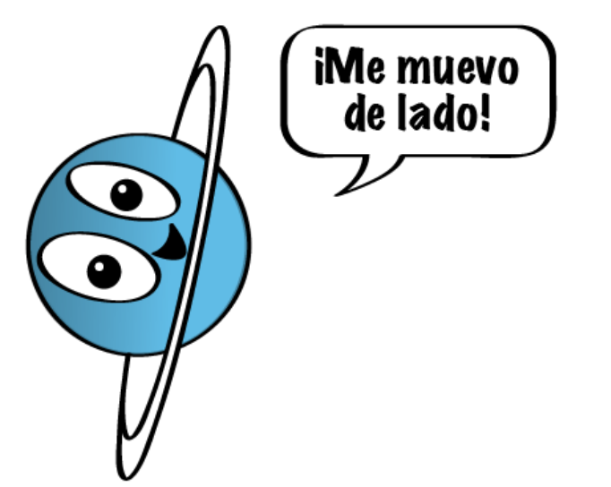

Urano está compuesto de agua, metano y amoniaco sobre un pequeño centro rocoso. Su atmósfera está hecha de hidrógeno y helio, como Júpiter y Saturno, pero además contiene metano. El metano es lo que le da a Urano el color azul.
Urano también tiene anillos tenues. Los anillos internos son angostos y oscuros. Los anillos externos tienen colores vivos y son más fáciles de ver. Como Venus, Urano rota en dirección opuesta a la de la mayoría de los otros planetas. Y, a diferencia de cualquier otro planeta, Urano rota de lado.

Estructura y superficie
Está rodeado por 13 anillos.
Es un gigante de hielo, en lugar de un gigante de gas. Está compuesto, en su mayor parte, por hielo fluido sobre un núcleo sólido.
Tiene una atmósfera densa hecha de metano, hidrógeno y helio.
Es el único planeta que rota de lado.
Da vueltas en la dirección contraria a las de la Tierra y de la mayoría de los planetas.
El tiempo en Urano
Un día dura un poco más de 17 horas. 17 horas y 14 minutos, para ser exactos.
Un año equivale a 84 año en la Tierra. ¡Tendrías que esperar demasiado para soplar las velas de tu cumpleaños!
Los vecinos de Urano
Se han identificado 27 lunas.
Es el séptimo planeta contando desde el Sol, lo que significa que sus vecinos son Saturno y Neptuno.
Breve historia
Urano fue descubierto en 1781 por William Herschel, en el Reino Unido.